v1에서 같은 계열끼리 구분이 안 됐다. 두 가지를 바꿨다.
실루엣 후보 16장 중 알파 마스크 IoU가 가장 낮은(= 가장 안 닮은) 조합을 뽑았다. 눈대중이 아니라 계산으로 골랐다.
등급색 발광부만 등급색으로 돌렸다(고급 초록 · 희귀 시안 · 영웅 보라 · 전설 금). 장갑판 금속은 그대로 흰색·회색이라 세계관은 유지된다.
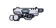
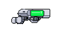
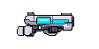
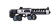
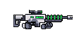
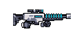
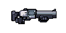
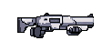
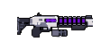
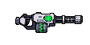
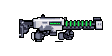
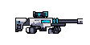
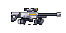
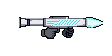
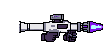
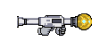
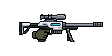
교체할 칸은 이름으로 말해라. 승인하면 EquipCatalog 13종 추가 + WeaponDef 20종 확장 + 상점 아이콘 자동 생성.